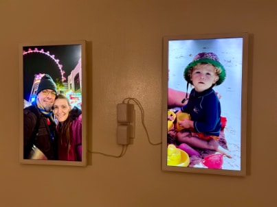
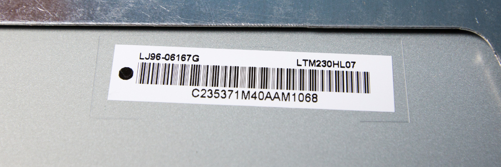
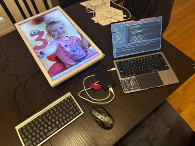
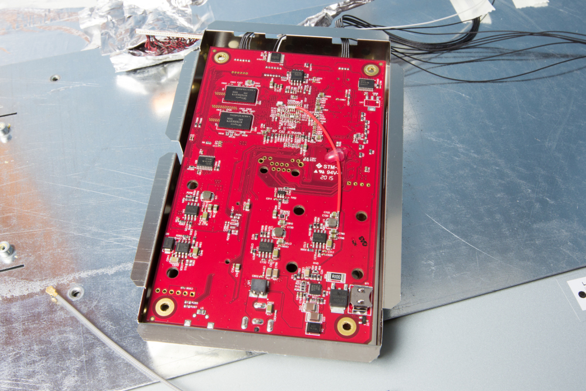
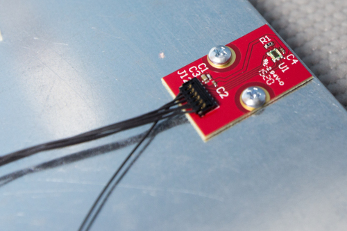

Electric Objects · EO1 & EO2
These are wall displays that spent their working lives showing whatever a server told them to. That server is gone. This is replacement Android software for the board inside the glass, so the pictures come from you now: files you drop onto the frame over your own network, a library you host yourself, or a web page you point it at — merged into one rotation, on a schedule you set.
Nothing in this app contacts a host you did not put into its configuration.


LTM230HL07 — the sticker on the back of the panel. A 1920×1080 LCD mounted sideways, which is why an EO1 shows 1080×1920 and why a landscape video arrives cropped rather than letterboxed.
Needs nothing No server, no account, no password, no certificate — the frame holds the files and serves its own web page to receive them. This is the source that keeps working when everything else is switched off.
Needs Immich 3.x Login is an account’s email and password; there is no API key. The frame rotates everything that account can see, and it can carry several frames from several servers at once. A server you do not run is a source you do not control.
Needs a URL One entry is one page, fetched again each time it comes up, in the browser that shipped with Android 4.4. Plan on a LAN dashboard or a deliberately legacy page, not a modern SPA.
adb on the network for an EO2. After that it is
browser-only.


This page is a card, not the manual. The repository’s markdown files are the authority and are kept current; read them where they live.